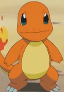
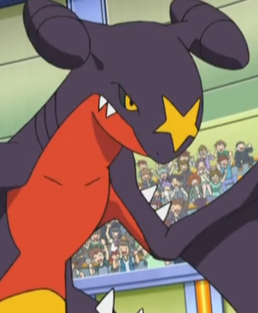
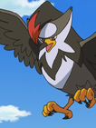

|
Assassin |
- Fate/stay Night
- Fate/stay Night Movie: Unlimited Blade Works
- Fate/stay Night TV Reproduction
- Carnival Phantasm
- Fate/stay Night: Unlimited Blade Works
- Fate/stay Night: Unlimited Blade Works 2nd Season
- Fate/stay Night Movie: Heavan's Feel - I. Presage Flower
|
Assassin is a servant summoned by Caster. As a servant, Assassin is entirely dependent on Caster mana. He lacks usual parameters and abilities granted to his class. He seeks a decent sword fight. |
| |
Beedrill |
- Pokemon
- Pokemon Chronicles
- Pokemon XY
|
 |
Charizard |
- Pokemon
- Pokemon Movie 1: The First Movie
- Pokemom Movie 3: Spell of the Unknown
- Pokemon Advanced Generations
- Pokemon Black and White: Adventure in Unova
- Pokemon Black and White: Decolora Adventure
|
Charizard is a Pokemon from the Kanto region. It's the final form of Charmander. Charizard has two mega evolve forms that it can take. Its fiery breth is capable of melting boulders, massive glaciers and can cause a forest fire. Shinichiro Miki voiced Ash's and Clark's Charizard. |
|  |
Charmander |
- Pokemon
- Pokemon Black and White: Adventure in Unova
|
Charmander is a starter Pokemon from the Kanto region. It been said that if its flame goes out Charmander dies. It is founded for more often in ownship of Trainers. Shinichiro Miki voiced Red's and Ash's Charmanders. |
 |
Charmeleon |
- Pokemon
- Pokemon Black and White: Adventure in Unova
- Pokemon Movie 20: I Choose You!
|
Charmeleon is a Pokemon from the Kanto region. Its the evolve form of Charmander. Strong opponents excite Charmeleon causing it to spout bluish-white flames that torch its surrounding. Shinichiro Miki voiced Ash's and Red's Charmeleons. |
| |
Flygon |
- Pokemon Advanced Generations
- Pokemon Movie 6: Jirachi Wish Maker
|
Flygon is a Pokemom from the Hoenn region. Flygon's eye have red covers that prevents sand from getting into its eyes. It is the final form of Trapinch. Flygon coexist well with Krookodile in searching for food. Shinichiro Miki voiced Drew's Flygon. |
|  |
Garchomp |
- Pokemon XY: Mega Evolution
- Pokemon XYZ
|
Garchomp is a Pokemon from the Sinnoh region. It is the final form of Gible. Garchomp can fly at an incredible speed to catch prey. It battles Salamence in air sometimes because they are competing for food. Shinichiro Miki voiced Remo's Garchomp. |
 |
Ninetales |
|
Ninetales is a Pokemon from the Kanto region. Ninetales is the final form of Vulpix. It is a very vengeful Pokemon that been known to curse anyone tht mistreat it. It can live 1,000 years cause of it nice tails. Shinichiro Miki voiced Blaine's Ninetales. |
 |
Roy Mustang |
- Fullmetal Alchemist: Brotherhood
- Fullmetal Alchemist: Brotherhood Specials
- Fullmetal Alchemist: Brotherhood - 4-Koma Theater
- Fullmetal Alchemist: The Sacred Star of Milos
|
Roy Mustang is a colonial for the military and an alchemist. His nickname is Flame Alchemist because he has the ability to control fire. Being arrogant and manipulative, Mustang is intelligent and always one step ahead of his opponents. |
 |
Snivy |
|
 |
Squirtle |
- Pokemon
- Pokemon Sun and Moon
|
Squirtle is a Pokemon from the Kanto region. Squirtle is the water type starter that a trainer can choose in the Kanto region. It can spray foamy water from its mouth with great accuracy. Squirtle's shell is powerful tool for its protection. |
|  |
Staraptor |
- Pokemon Diamond and Pearl
|
Staraptor is a Pokemon from the Sinnoh region. Its the final form of Starly. Staraptor's powerful and muscles allow it fly. Shinichiro Miki voiced Barry's Staraptor. |
 |
Turtwig |
- Pokemon Diamond and Pearl
|
| |
Wartortle |
|